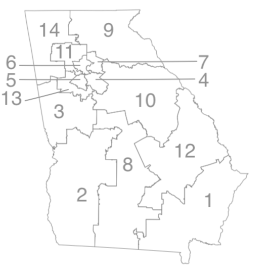

What Georgia 2020 candidates are tweeting ...
By Maggie Lee
Last update: {{ formatted_timestamp }} EST
Welcome to Georgia Election Twitter: tweets from Georgia's 2020 U.S. Senate and U.S. House candidates, in near-real time.
Senate Regular Election (statewide vote)
Senate Special Election (statewide vote)
|
GA 1 |
 |
Or just scroll through the latest:
-
{% for obj in latest.rows %}
-
{{ obj['display_name']|replace('Noel', 'Noël') }}:
{{ obj['full_text'] }}
{{ obj['created_at_est'] }} | Full tweet...
{% endfor %}